01 Ein-, merhdimensionale & verzweigte Arrays
Ein Array ist eine Datenstruktur, in der Variablen des gleichen Typs gespeichert werden können. Arrays eignen sich hervorragend um mit einer feststehenden Anzahl von Objekten des gleichen Typs zu arbeiten. Vorstellen kann man sich ein eindimensionales Array als einen Schrank mit Schubladen, bei dem jede Schublade eine Nummer trägt (0-X). Sobald der Schrank erst ein Mal geschreinert wurde, kann dessen Größe und nicht ohne weiteres verändert werden! Als Beispiel legen wir ein Array vom Typ int an:
int[] einDimensional;
Dieses Array ist jedoch noch leer. Als nächstes geben wir an, wie große das array sein soll:
einDimensional = new int[5];
Um auf eine Stelle im Array zuzugreifen, wird der Arrayname gefolgt von einer Eckigen Klammer, in der die Position, auf die wir zugreifen wollen angegeben wird:
einDimensional[0] = 12;
einDimensional[1] = 4;
einDimensional[2] = 53;
einDimensional[3] = 6;
einDimensional[4] = 136;
Dieses Array kann nun bis zu 5 int Werte enthalten. Wollen wir nun auf eines der Elemente zugreifen, sähe der Zugriff so aus:
int testZuweisung = einDimesional[4];
Wir weisen der neuen int Variable als Test das fünfte Arrayelement zu. Es handelt sich um das fünfte Element, da wir bei Arrays mit dem Zählen nicht bei 1 sondern bei 0 beginnen.
Ein mehrdimensionales Array kann man sich als Tabelle vorstellen. Ein zweidimensionales Array mit zwei Reihen und drei Spalten würden wir wie folgt anlegen::
int[,] mehrDimensional = new int[2][3]; // , gibt an, dass es sich u ein mehrdimensionales Array handelt
Wir haben nun ein Array angelegt, das aus 2 Positionen besteht, die jeweils 3 weitere Elemente beinhalten. Wollen wir nun z.B. dem zweiten Element der ersten Reihe einen Wert zuweisen sähe dies wie folgt aus:
mehrDimensional[0][1] = 36;
Arrays können auch mit Hilfe einer Kurzschreibweise befüllt werden. Hier am Beispiel eines eindimensionalen und eines zweidimensionalen Arrays:
int[5] einDim = {12, 55, 46, 320, 88};
int[2][3] zweiDim = {{6, 8, 3,} , {5, 45, 2}};
Ein verzweigtes Array ist ein Array, das weitere Arrays beinhaltet. Es existieren außerdem auch mehrdimensionale verzweigte arrays. Im Folgenden zu beiden je ein Beispiel inkl. Zugriff:
int[][] verzwArray = new int[3][]; //3 gibt hier die Menge der enthaltenen Arrays an
//Befüllung
verzwArray[0] = new int[2] //Das enthaltene erste Array beinhaltet 2 Felder
verzwArray[1] = new int[3] //Das enthaltene erste Array beinhaltet 3 Felder
verzwArray[2] = = new int[4] //Das enthaltene erste Array beinhaltet 4 Felder
//Alternative befüllung des verzweigten Arrays
verzwArray[0] = {52, 4};
verzwArray[0] = {3, 23, 4};
verzwArray[0] = {2, 11, 56, 0};
//Alternativ kann das Array auch direkt nach der deklaration befüllt werden
int[][] verzwArray = new int[][]
{
new int[] = {52, 4},
new int[] = {3, 23, 4},
new int[] = {2, 11, 56, 0}
};
Ein Zugriff auf das erste Element des zweiten Arrays würde wie folgt aussehen:
int testZuweisung = verzwArray[1][0];
Nun zur Syntax des mehrdimensionalen Verzweigten Arrays
//Mehrdimensionales Verzweigtes Array
int[][,] verzwArrayMD = new int[3][,]
{
new int[,] = { {52, 4} , {1, 12}, {8, 99}, {10, 21} },
new int[,] = { {45, 34} , {8, 36} },
new int[,] = { {0, 8} , {15, 160}, {65, 7} }
};
Nun wollten wir dem ersten Element[,0], an der dritten Stelle[2,] des ersten Arrays[0] zugreifen den Wert 42 zuweisen:
//Array 1 Stelle 3, erstes Element ist derzeit 8
//Weise diesem Element die Zahl 42 zu.
verzwArrayMD[0][2,0] = 42;
Das war für den Anfang ganz schön viel. Nach etwas Übung sind Arrays allerdings leicht zu benutzen und vor allem SEHR praktisch!
02 Parameter-Arrays & Auflistungen
Arrays können auch als Parameter in eine Methode übergeben werden. So eine Methode kann z.B. so aussehen:
public int CrossSum(int[] arr){
//berechnet die Quersumme aller Arrayelemente
//return Quersumme
}
Arrays werden in Methoden als Wert übergeben (ergo nicht als Referenz). Durch das voranstellen vom Schlüsselwort ref kann ein Array auch als Referenz übergeben werden. Kurzgesagt bedeutet Referenztyp, dass eine Referenz auf den Speicherplatz der Variablen vergeben wird, d.h. verändert man eine variable b, die eine Referenz zu Variable a enthält, so ändert sich auch Variable a. Werttypen sind kopien, wenn man sie verändert, verändert sich die ursprüngliche Variable nicht.
Stellen wir uns vor, dass unser Witcher auf 5 verschiedene Monster Objekte trifft. Wir könnten nun eine Witche Klasse erstellen und eine Methode hinzufügen, die ein Array aus Monster-Objekten als Parameter auswertet und anschließend die Eigenschaften eines jeden Monsters auflistet. Hierfür räumen wir zunächst mal die Main Methode auf, verändern die Monster Klasse und erstellen eine Witcher Klasse.

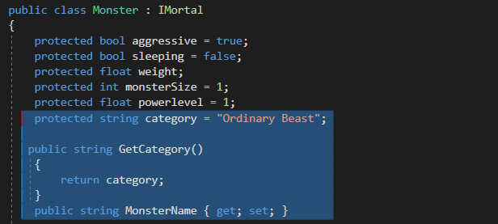 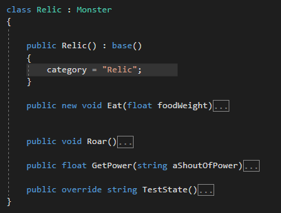 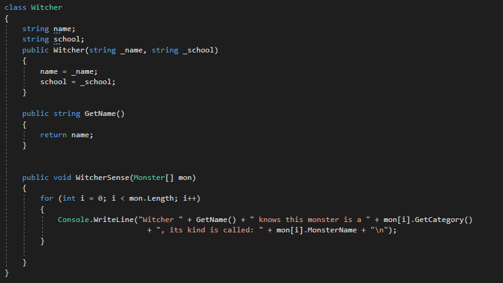 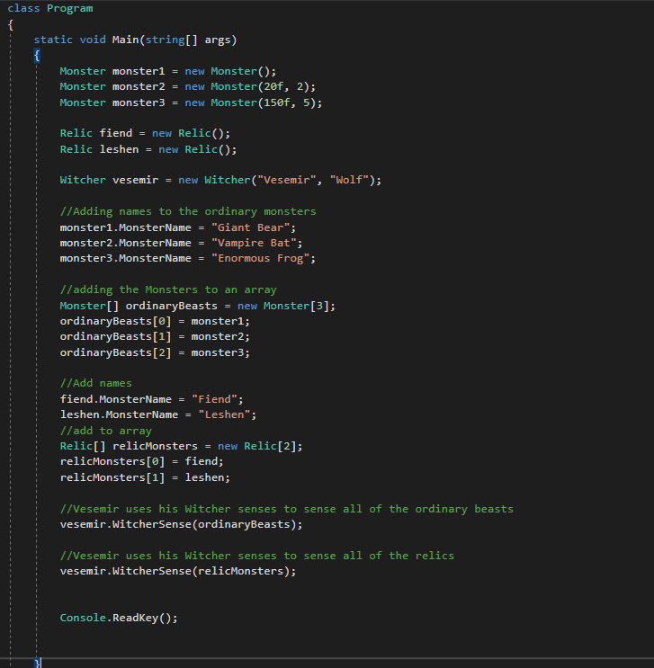 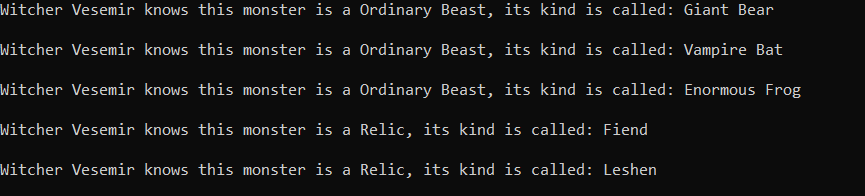
Unser Witcher ist nun einen Schritt näher Monster jagen zu können!

Anstatt eines Arrays können wir auch eine Liste verwenden. Der Vorteil einer Liste ist, dass wir sie schnell mit einer foreach Anweisung durchlaufen können und wir können problemlos weitere Elemente zur Liste hinzufügen:
Im Falle von einer Liste braucht die WitcherSense Methode etwas mehr arbeit, damit sie auch Child-Objekte von Monster.class (Fiend) akzeptiert. 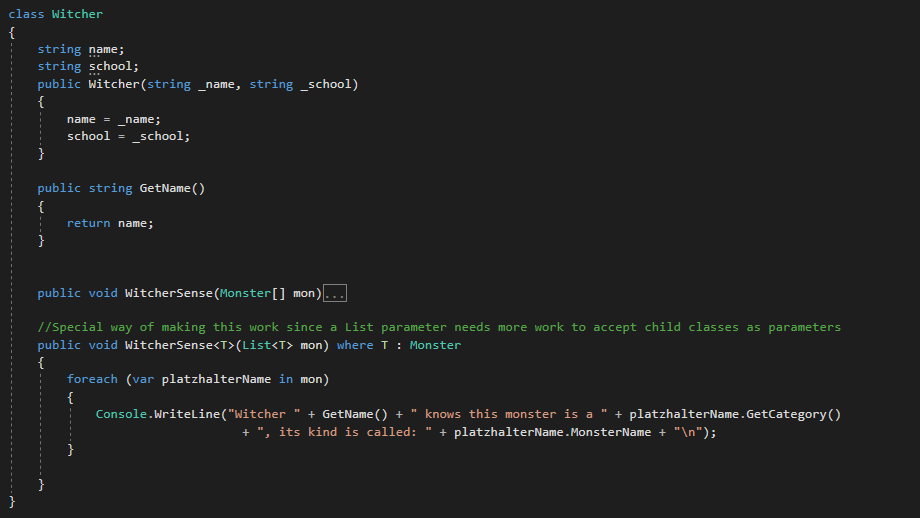
Eine foreach Anweisung durchläuft jedes Element in einer angegebenen Liste (hier mon) und weist dem Element eine Variable zu (platzhalterName). Der Variablenname wurde gewählt, u zu verdeutlichen, dass es sich hier nur um einen Bezeichner handelt, man also auch jeden anderen Namen hätte verwendet können. Diese Variable ist vom typ var (wie wir bereits aus JavaScript kennen). Anschließend werden die Methoden via Punktnotation aufgerufen.
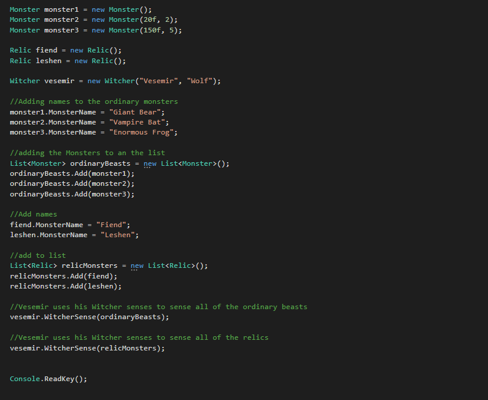 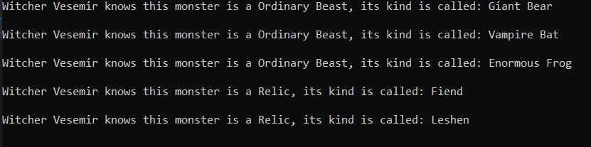
Da haben wir jetzt schon einiges geschafft, Applaus hierfür!
03 ArrayList & Auflistungsinitialiser
ArrayLists sind Arrays, deren größe dynamisch verändert werden kann. Sie werden dazu verwendet verschiedene Typen in einer Liste zu speichern. Wir könnten z.B. unser Witcher Objekt in der selben Liste wie unser Fiend Objekt speichern, dies wäre in normalen Arrays oder Listen nicht möglich, da diese einen bestimmten Typen benötigen.
ArrayList myAL = new ArrayList();
myAL.Add(vesemir);
myAL.Add(monster1);
myAL.Add(fiend);
ArrayList wird jedoch als veraltet betrachtet und ist wenig performant. Daher sollte stattdessen List<Object> verwendet werden!
List<Object> testL = new List<Object>();
testL.Add(vesemir);
testL.Add(monster1);
testL.Add(fiend);
Objektinitialisierer: Wir sind bisher schon über die Kurzschreibweise von Properties gestolpert (int variable {get; set;}), mit Hilfe dieser können wir bereits bei der Objekterstellung dafür sorgen, dass das Objekt mit mehr Variablen initialisiert wird, als der Konstruktor zulassen würde:
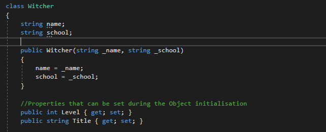 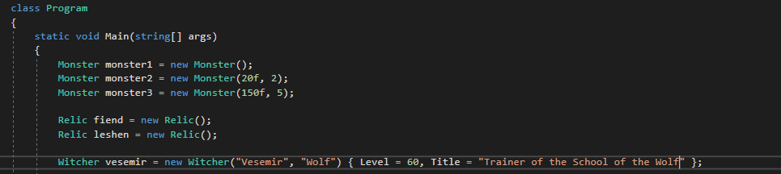
Wie wir sehen können, können wir die Properties direkt hinter dem Konstruktoraufruf des Objekts initialisieren.
Dies ist auch beim initialisieren von Objekten in Listen möglich:
List<Witcher> wolfSchoolList = new List<Witcher>()
{
new Witcher("Eskel", "Wolf") {Level = 45, Title = "None" },
new Witcher("Lambert", "Wolf") { Level = 31, Title = "The Grumpy" },
new Witcher("Geralt", "Wolf") { Level = 45, Title = "The White Wolf" }
};
04 Listen mit einem Enumerator durchlaufen
Um sich ein Element in einer Liste anzeigen lassen zu können, muss man mit einem Enumerator (Aufzähler) die Liste durchlaufen. Zunächst muss ein Enumerator (hier enu gennant) angelegt werden. Dieser kann dann über die Methode MoveNext() auf das nächste Element in der Liste zeigen. Auf das aktuelle Listenelement kann mit der Methode Current() zugegriffen werden. Hier ein Beispiel anhand unserer ordinaryBeasts List:
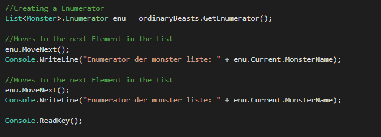
Die Methode Reset() setzt den Enumerator wieder zurück auf seine ursprüngliche Position, diese befindet sich noch vor dem ersten Element der Liste!
05 Indexer & Warteschlangen & Stapel
Ein Indexer ist eine besonere Art von Property, den man dazu verwenden kann z.B. ein privates Array durch die Property Schreibweise (get; set;) zu manipulieren. Hier ein Beispiel:
class IndexerTest
{
private string[] testArray = new string[10]; // internal data storage
public string this[int index]
{
get
{
//Checks if the Array is out of bounds
//If the array is out of bounds no error will be thrown
//instead an exception will be thrown
if (index < 0 && index >= testArray.Length)
throw new IndexOutOfRangeException("Index out of range");
//returns the private array
return testArray[index];
}
set
{
//Same Exception handling as above
if (index < 0 || index >= testArray.Length)
throw new IndexOutOfRangeException("Index out of range");
//manioulates the private array
testArray[index] = value;
}
}
}
In der Main Methode könnten wir nun die das Array wie folgt befüllen:
StringDataStore storeString = new IndexerTest();
storeString[0] = "Cintra";
storeString[1] = "Oxenfurt";
storeString[2] = "Vizima";
storeString[3] = "Toussaint";
Durch den Indexer können wir dem internen Array des Objekts strings zuweisen, als ob wir ein normales Array ansprechen würden.
Warteschlangen: Warteschlangen sind zirkuläre Arrays das heißt, wenn ein Objekt hinzugefügt wird, wird ein anderes aus der Queue gestoßen. (First in first out Prinzip).
Zitat
Warteschlangen und Stapel sind nützlich, wenn Sie temporären Speicher für Informationen benötigen. Das heißt, wenn Sie ein Element nach dem Abrufen seines Werts verwerfen möchten. Verwenden Sie Queue, wenn Sie auf die Informationen in derselben Reihenfolge zugreifen müssen, in der Sie in der Sammlung gespeichert sind. Verwenden Sie Stack, wenn Sie in umgekehrter Reihenfolge auf die Informationen zugreifen müssen.
Da normale die Queue Klasse veraltet ist, wird die Queue<T> Klasse verwendet (T ist ein Platzhalter für Type). Beispiel:
Queue<string> citiesTemp = new Queue<string>();
citiesTemp.Enqueue("Cintra");
citiesTemp.Enqueue("Oxenfurt");
citiesTemp.Enqueue("Vizima");
citiesTemp.Enqueue("Toussaint");
foreach (string city in citiesTemp)
{
Console.WriteLine(city);
}
Output in der Konsole:
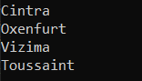
06 Dictionary (alt: Hash-Tabelle)
Ein Dictionary ist ein Auflistungstyp, der einen Schlüssel mit einem Wert in Verbindung bringt.
//creating a Dictionary Collection
Dictionary<string, string> witcherWiki =
new Dictionary<string, string>();
//Adding Keys and Values
witcherWiki.Add( "Fiend", "Fiends are walking mountains of muscle capped with horned, tooth-filled heads.");
witcherWiki.Add( "Witcher", "Taken in as children, witchers-to-be are subjected to intense alchemical processes, consumption of mutagenic compounds, and relentless physical and magical training to make them dangerous and highly versatile against their vast array of opponents, many of which possess superhuman speed, strength and/or other deadly powers.");
07 Mit Aufzählungstypen arbeiten
Aufzählungstypen (Enumerationstyp enum) ist eine Klasse die eine Gruppe aus Konstanten umfasst. Sei werden oft in Switch-Anweisungen verwendet um zwischen Zuständen zu wechseln. Beispiel Enum:
//A enum has by default values for each entry starting with zero
enum HealthStatus{
Healthy, //0
Wounded, //1
SeverelyWounded, //2
Dead //3
}
static void Main(string[] args) {
//Enum Access via Punktnotation
HealthStatus currentState = HealthStatus.Wounded;
//Showcasing the numeric values of each enum Element
Console.WriteLine(currentState);
//Will output: 1
switch(currentState){
HealthStatus.Healthy:
//play the normal Animation set
break;
HealthStatus.Wounded:
//play the wounded Animation set
break;
HealthStatus.SeverelyWounded:
//play the almost dead Animation set
break;
HealthStatus.Dead:
//Stop the Animations
//go to Game Over Screen
break;
}
}
Das war einfach!
08 Strukturen & Klassen
Strukturen = struct
Klassen = class
Zitat
Klassen und Strukturen sind zwei der grundlegenden Konstrukte des allgemeinen Typsystems in .NET Framework. Bei beiden handelt es sich um eine Datenstruktur, die einen als logische Einheit zusammengehörenden Satz von Daten und Verhalten kapselt. Die Daten und die Verhalten sind die Member der Klasse oder Struktur. Diese enthalten deren Methoden, Eigenschaften, Ereignisse usw….
Strukturen (sruct) sind Werttypen (nicht Verweistypen) eignen sich vor allem für kleinere Datenansammlungen, die nach ihrer Erstellung nicht mehr geändert werden. Variablen in einem struct enthalten direkt die Daten und nicht, wie Variablen von Klassen nur einen Verweis auf die Daten. Sytnaktisch ähneln sie Klassen sehr und können auch ähnlich wie Klassen verwendet werden. Structs können jedoch keinen Default Constructor besitzen (leerer Konstruktor), sie können nur Konstruktoren besitzen, in denen allen Variablen ein Wert zugewiesen wird. Beispielcode für eine Struktur:
struct Farmer{
public int zipCode;
public string completeName;
public string socialSecurityNumber;
public int AcresOfLand (get; set;)
//Structs also can make use of MEthods, Events etc.
}
Genauer infos zu Strukturen können im letzten Link unter 08 im Quellverzeichnis dieser Seite gefunden werden.
Quellen und weiterführende Links
01 https://docs.microsoft.com/de-de/dotnet/csharp/programming-guide/arrays/jagged-arrays
https://docs.microsoft.com/de-de/dotnet/csharp/programming-guide/arrays/
http://openbook.rheinwerk-verlag.de/c_von_a_bis_z/011_c_arrays_009.htm#mj1fafabf9621c60d77f7be86a236b292d
02 https://docs.microsoft.com/de-de/dotnet/csharp/programming-guide/classes-and-structs/passing-parameters
https://docs.microsoft.com/de-de/dotnet/csharp/programming-guide/classes-and-structs/passing-value-type-parameters
https://docs.microsoft.com/de-de/dotnet/api/system.collections.generic.list-1?view=netframework-4.8
03 https://docs.microsoft.com/de-de/dotnet/api/system.collections.arraylist?view=netframework-4.8
04 https://docs.microsoft.com/de-de/dotnet/api/system.collections.generic.list-1.enumerator?view=netframework-4.8
05 https://docs.microsoft.com/de-de/dotnet/api/system.collections.generic.queue-1?view=netframework-4.8
https://docs.microsoft.com/de-de/dotnet/api/system.collections.queue?view=netframework-4.8
https://www.tutorialsteacher.com/csharp/csharp-indexer
https://docs.microsoft.com/de-de/dotnet/api/system.collections.generic.queue-1?view=netframework-4.8
06 https://docs.microsoft.com/de-de/dotnet/api/system.collections.hashtable?view=netframework-4.8
https://docs.microsoft.com/de-de/dotnet/api/system.collections.generic.dictionary-2?view=netframework-4.8
https://www.tutorialsteacher.com/csharp/csharp-dictionary
07 https://docs.microsoft.com/de-de/dotnet/csharp/language-reference/builtin-types/enum
https://www.w3schools.com/cs/cs_enums.asp
08 https://docs.microsoft.com/de-de/dotnet/csharp/programming-guide/classes-and-structs/
https://www.tutorialsteacher.com/csharp/csharp-struct